Geometrija.Gume.Ovjes.
3D autooptika, vulkanizerske usluge, popravak ovjesa i kočnica. Ulje kupite kod nas, a izmjenu ulja i filtera radimo besplatno.
Pon–Pet 8–16 · Sub 8–13
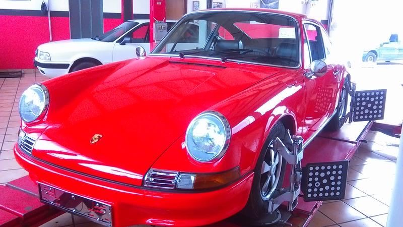
Radionica3D autooptika
- Michelin
- Continental
- Pirelli
- Bridgestone
- Goodyear
- Dunlop
- Nokian
- Sava
- Fulda
- Kleber
- Firestone
- BFGoodrich
- Tigar
Sve oko kotača
na jednom mjestu
Od geometrije i guma do zglobova, amortizera i kočnica. Autodijelove raznih marki i proizvođača nabavljamo i ugrađujemo.
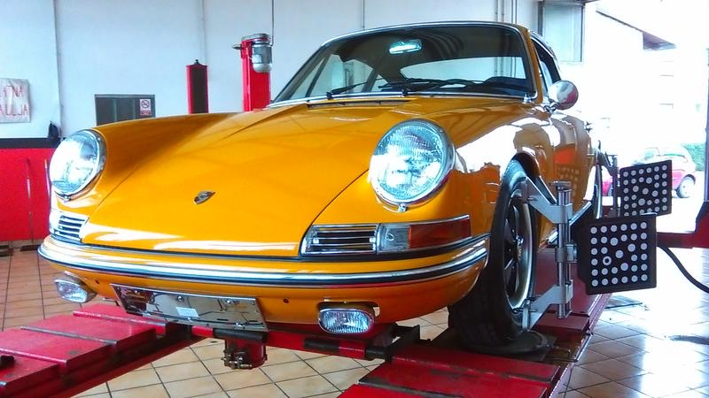
3D autooptika
Geometrija (špur) kotača i centriranje ovjesa. Gume se troše neravnomjerno? Auto je nestabilan?
Opširnije →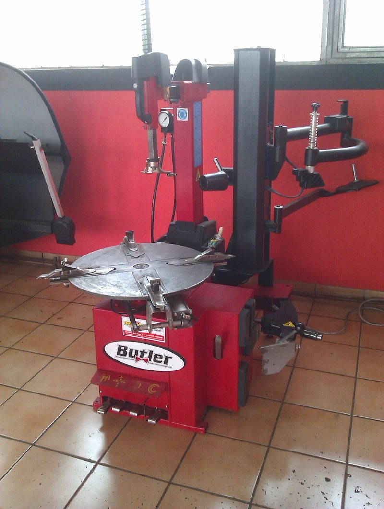
Vulkanizacija
Prodaja, montaža i balansiranje guma za osobna, kombi i terenska vozila.
Opširnije →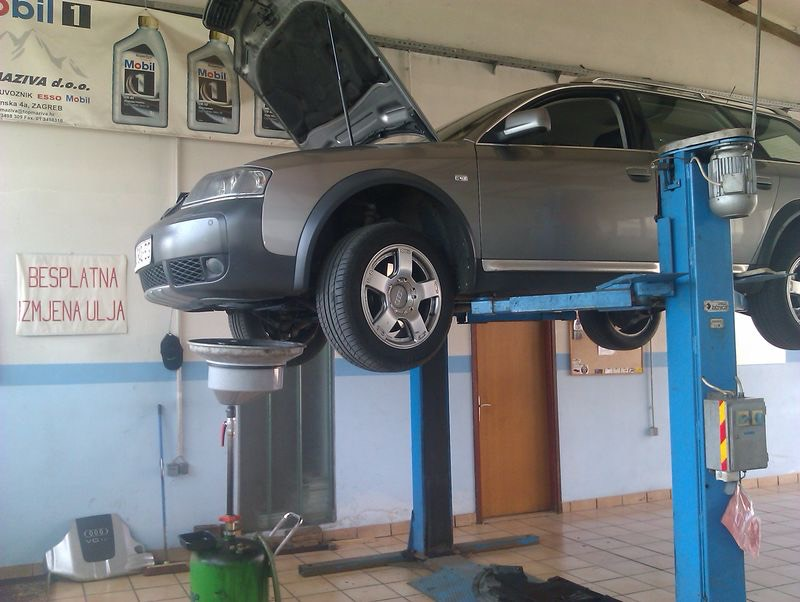
Besplatna izmjena ulja
Kupite li ulje kod nas, izmjenu ulja i filtera ulja radimo besplatno.
Opširnije →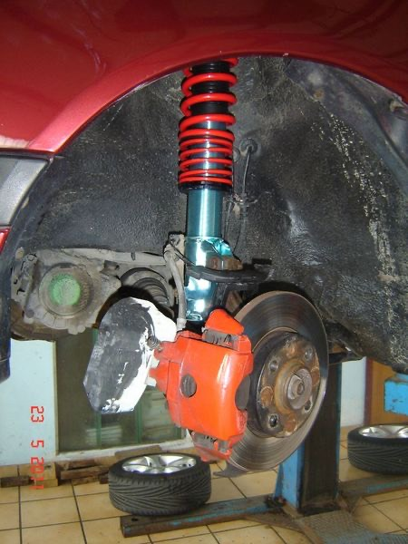
Ovjes i kočnice
Letve volana, krajnici, spone, kugle, amortizeri, ležajevi, diskovi i pločice.
Opširnije →Opišite simptom,
znamo gdje gledati
Odaberite što primjećujete u vožnji. Za pregled i termin nazovite 047 638 321.
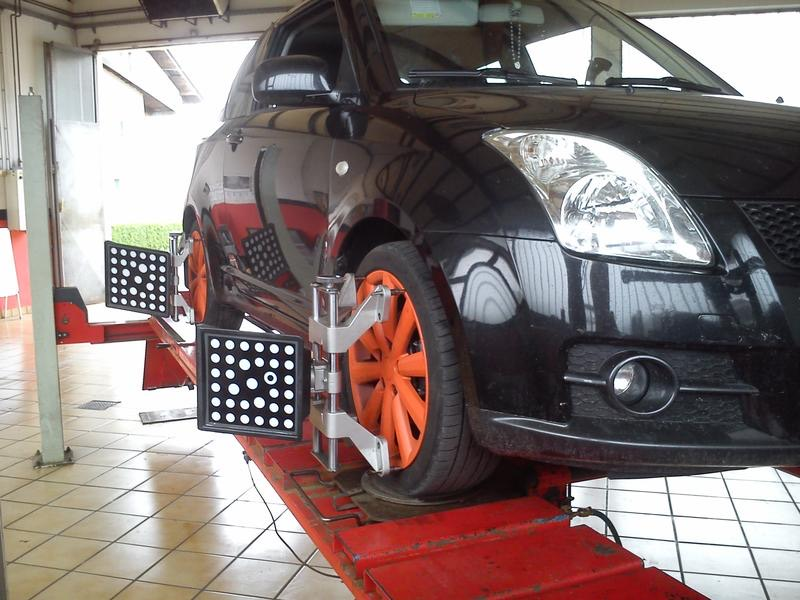
3D geometrija kotača
Neravnomjerno trošenje guma i nestabilan automobil najčešći su znakovi da geometrija nije podešena. Pravilno podešena geometrija (trag, nagib i zatur) produljuje vijek guma i vraća stabilnost i upravljivost.
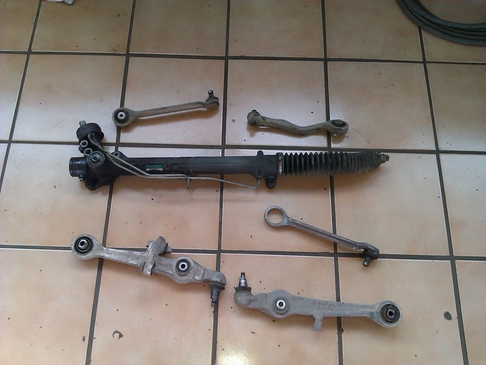
Letve volana, krajnici, spone, kugle
Nešto lupa u vožnji? Okrećete volan, a auto kasno reagira? Mijenjamo letve volana, krajnike, spone, kugle, ramena i vilice.
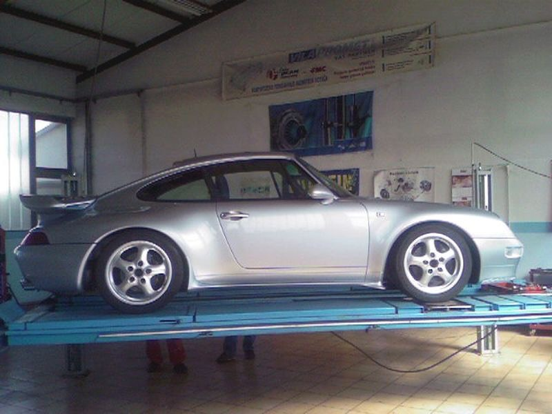
Ležajevi kotača, rukavci, glavčine
Primjećujete šum i brujanje kojeg prije nije bilo? Mijenjamo ležajeve kotača, rukavce i glavčine.
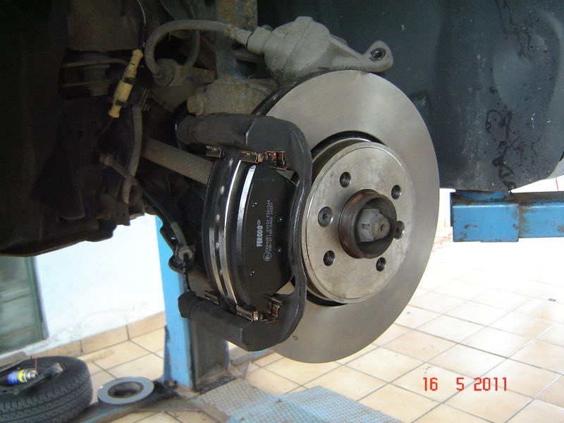
Kočnice
Automobil se zanosi prilikom kočenja? Ručna kočnica je zategnuta, a auto se miče? Mijenjamo kočione diskove, pločice, cilindre i sajle ručne kočnice.
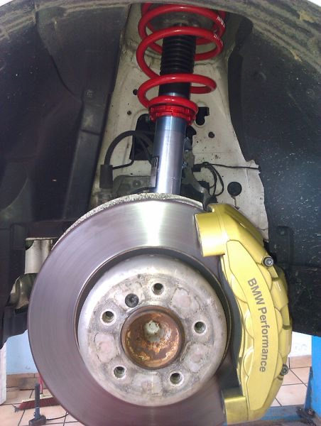
Amortizeri i opruge
Auto se previše ljulja i zanosi u zavojima, a i male neravnine čine se puno većima? Mijenjamo amortizere, opruge, ležajeve amortizera i selene. Radimo i podešavanje visine vozila, spuštanje ili podizanje.
Homokinetički zglobovi
Čujete pucketanje u punom skretanju? Naplatak vam je mastan? Mijenjamo homokinetičke zglobove, manžete i poluosovine.
„Snaga je ništa
bez kontrole…”
Poznata rečenica koja najbolje opisuje ulogu ovjesa. Vozači rallyja toga su svjesniji, ali važnost ispravnog i dobro podešenog ovjesa ne bi trebao zanemariti nitko, bez obzira koliko mu auto bio „standardan”.
Položaj kotača definiraju trag, nagib i zatur. Pravilno podešena geometrija (optika, špur, centriranje trapa) osigurava stabilnost i upravljivost, a gume se ne troše neravnomjerno. Dulji vijek guma znači i uštedu novca.
Geometriju treba redovno kontrolirati: obavezno nakon izmjene zglobova, amortizera ili letve volana te kod promjene guma. Preporuka je jednom godišnje.
Od Fiće
do Porschea
Fotografije iz naše radionice u Novim Novakima.
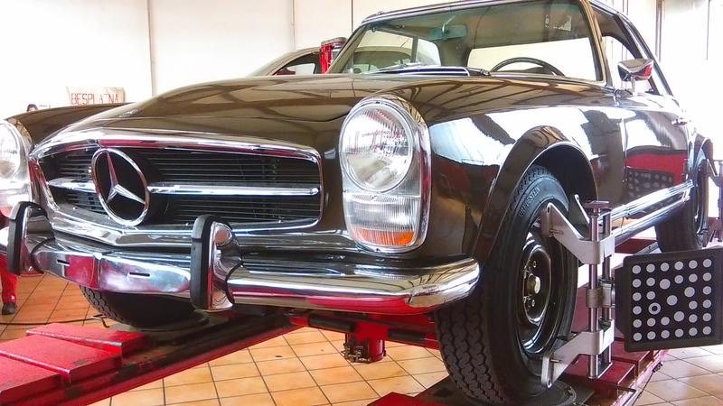
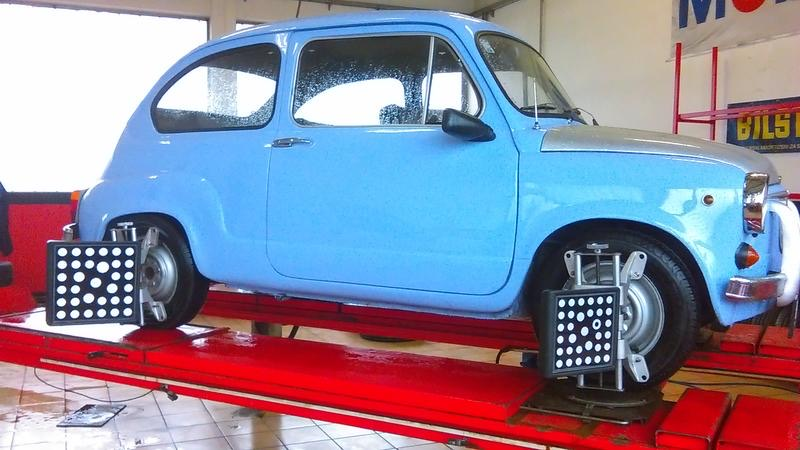
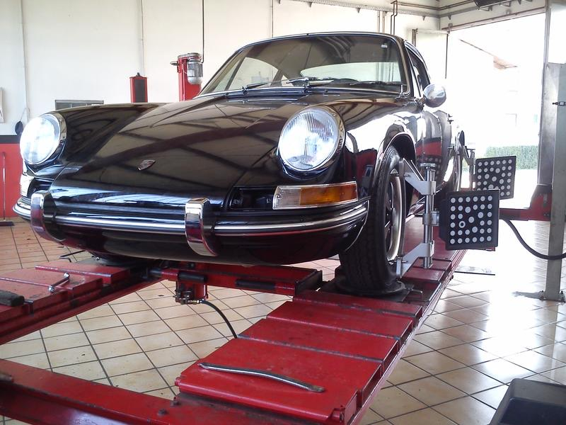

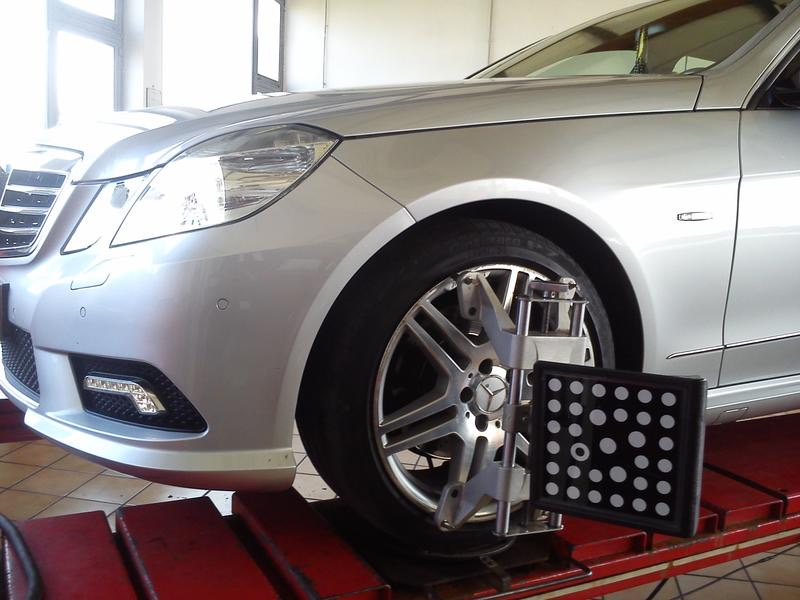
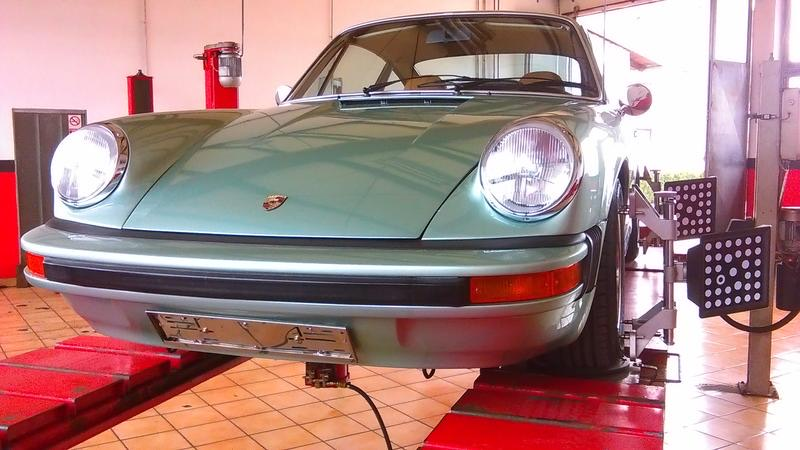
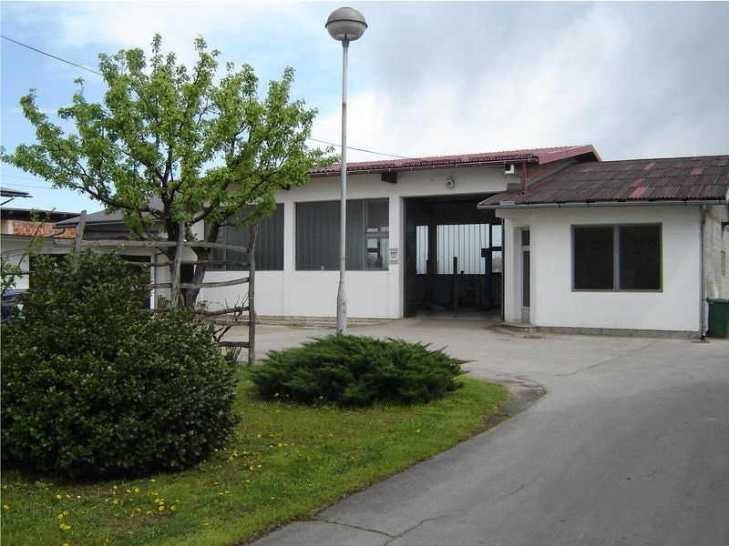
Prije nego
nazovete
Kako dogovoriti termin?
Termin se dogovara telefonom na 047 638 321, od ponedjeljka do petka 8–16 h i subotom 8–13 h.
Koliko često provjeriti geometriju?
Ovisi o tome koliko kilometara prelazite i kakvim cestama vozite, a preporuka je jednom godišnje. Obavezno nakon izmjene zglobova, amortizera ili letve volana te kod promjene guma.
Kako dobiti besplatnu izmjenu ulja?
Ako motorno ulje kupite kod nas, izmjenu ulja i filtera ulja radimo besplatno. U ponudi su Mobil, Shell, Castrol, Total i Elf.
Za koja vozila prodajete gume?
Za osobna, kombi i terenska vozila, više marki poznatih proizvođača. Za cijene nazovite i provjerite.
Koji su znakovi da auto treba geometriju?
Gume se troše neravnomjerno ili je automobil nestabilan na cesti.
Dogovorite
termin
| Ponedjeljak | 8–16 |
| Utorak | 8–16 |
| Srijeda | 8–16 |
| Četvrtak | 8–16 |
| Petak | 8–16 |
| Subota | 8–13 |
| Nedjelja | ne radimo |
Pripremite upit
Upišite vozilo i što treba napraviti. Pripremit ćemo poruku koju možete pročitati u pozivu ili poslati.